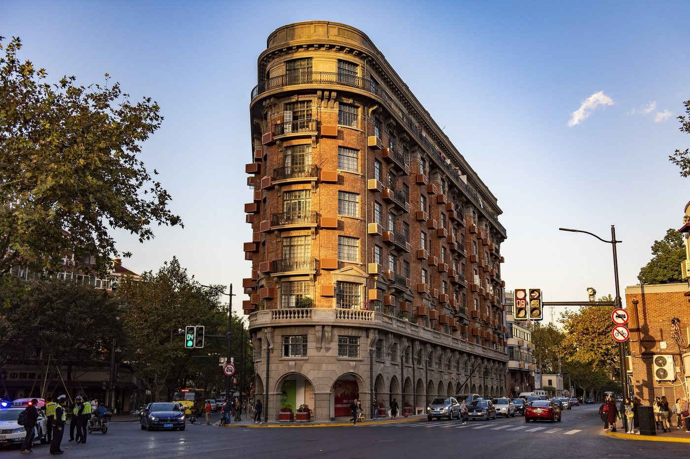
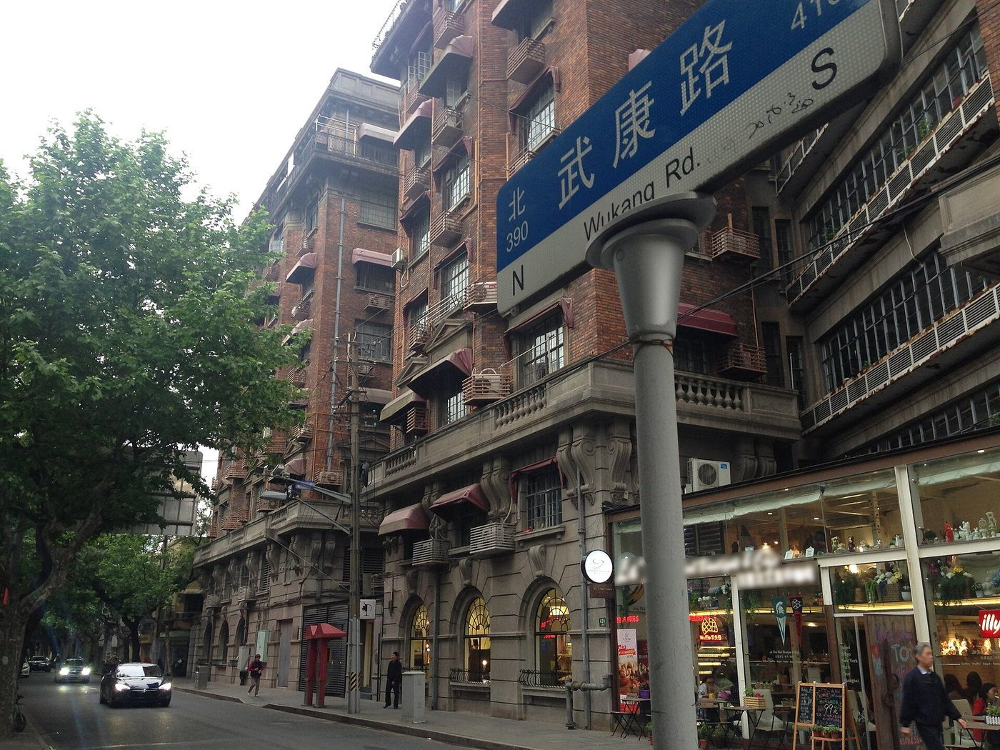
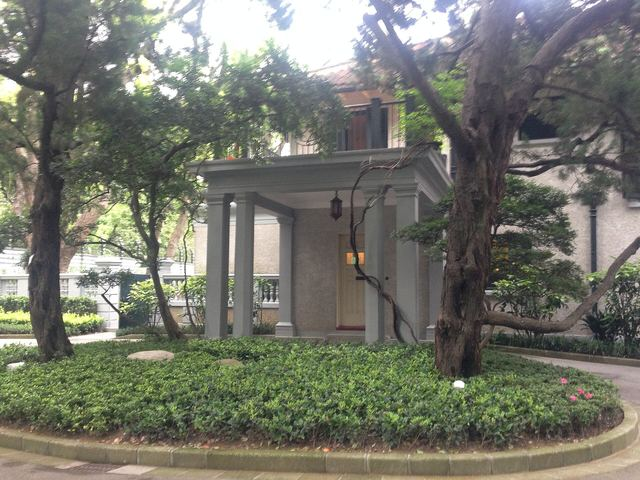

Wukang Road and Anfu Road: a plane-tree walk 武康路—安福路（原法租界梧桐区）
Historic street walk · Xuhui
CheckedRoute and history read



Plan 3-4 hours for about 3 km under plane trees, with cafe stops. Weekends bring photo queues.
Why it matters
The French Concession was Shanghai's premier residential district. Wukang Road, with 37 protected buildings, became a National Historic and Cultural Street in 2011. In the 1890s the American educator John Calvin Ferguson built a dirt road here at his own expense; the French widened and paved it in 1907 as Route Ferguson, and it became Wukang Road in 1943.
What to see
Wukang Mansion (1924, by Laszlo Hudec; residential, do not enter); Ba Jin's former home (No. 113); Tang Shaoyi's former home (Lane 40, No. 1; assassinated there by Kuomintang agents on 30 Sep 1938); lane villas; then Anfu Road's cafes.
How to get there
Metro to Jiao Tong University, walk to Wukang Mansion (武康大楼), north up Wukang Road, then along Anfu Road; end at Changshu Road station or take a taxi.
Local tip
If you want one sit-down stop, take it on Anfu Road, not at the Wukang Mansion corner. Combine with a late lunch, then finish by dusk.
Watch out
Wukang Mansion is a residential building: do not enter, and do not walk into lanes or courtyards where people live. Weekend crowds; this is a cafe-and-boutique district, not a quiet one.
What was checked, and what was not
Read by 16 Nov 2026
The road's history is confirmed against Wikipedia and Chinese sources, and so is the station order of Lines 1 and 10. A 2026 walking guide confirms the route and that Wukang Mansion is residential. It is a public street.
Not checked
Ba Jin house hours (sources conflict) and any ticket rule; exit numbers; 2026 leaf colour; walking times, which are map estimates.
Sources
- Wikipedia, Wukang Roaden.wikipedia.org Opens in a new tab
- Wander in China, Wukang and Anfu walk (2026)wanderinchina.com Opens in a new tab
- SmartShanghai, Ba Jin former residencesmartshanghai.com Opens in a new tab
- Shanghai government, 20 routes guide (May 2026)english.shanghai.gov.cn Opens in a new tab
Nearby
